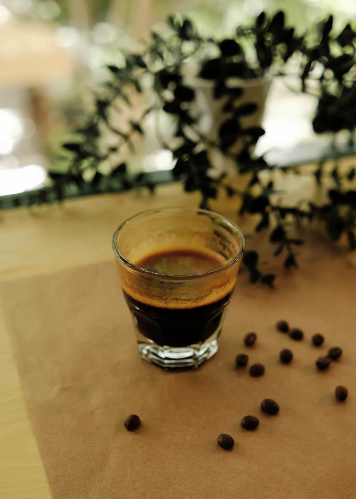
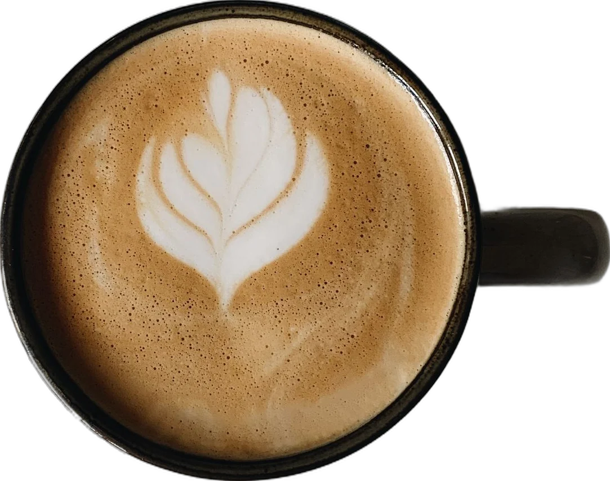
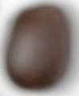
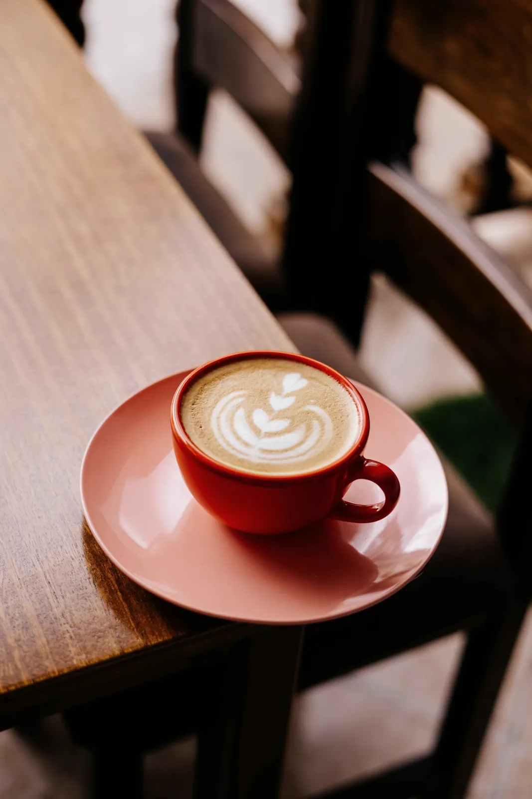
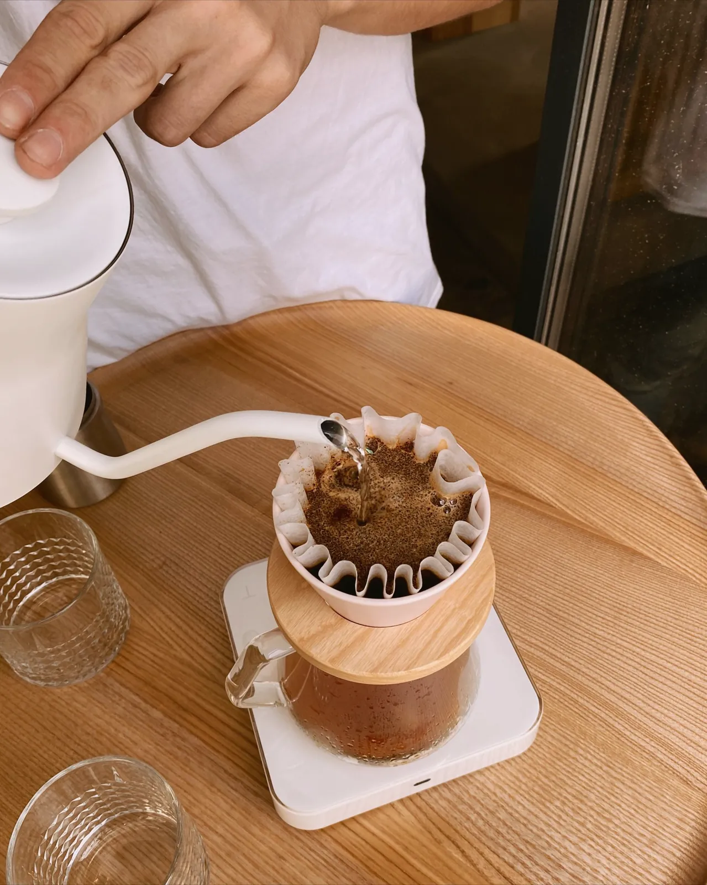
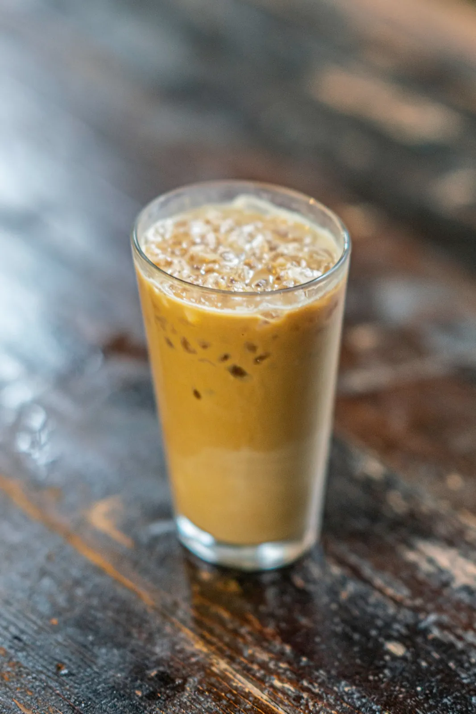
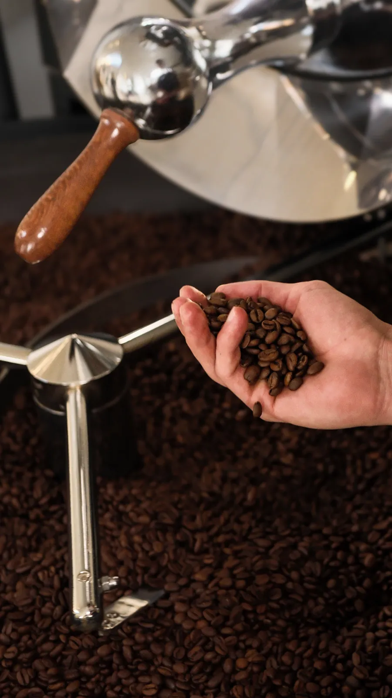
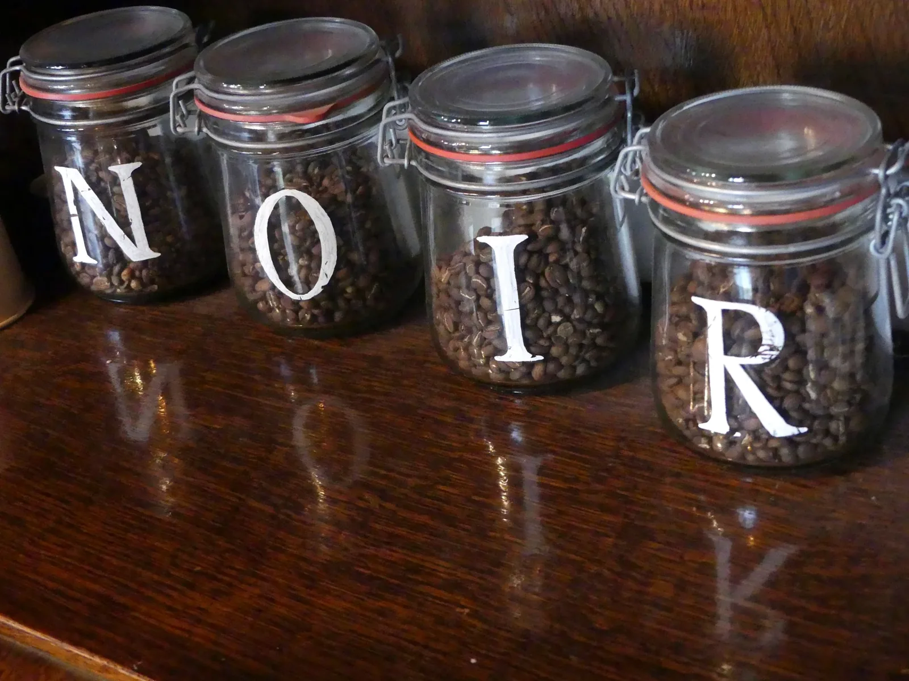
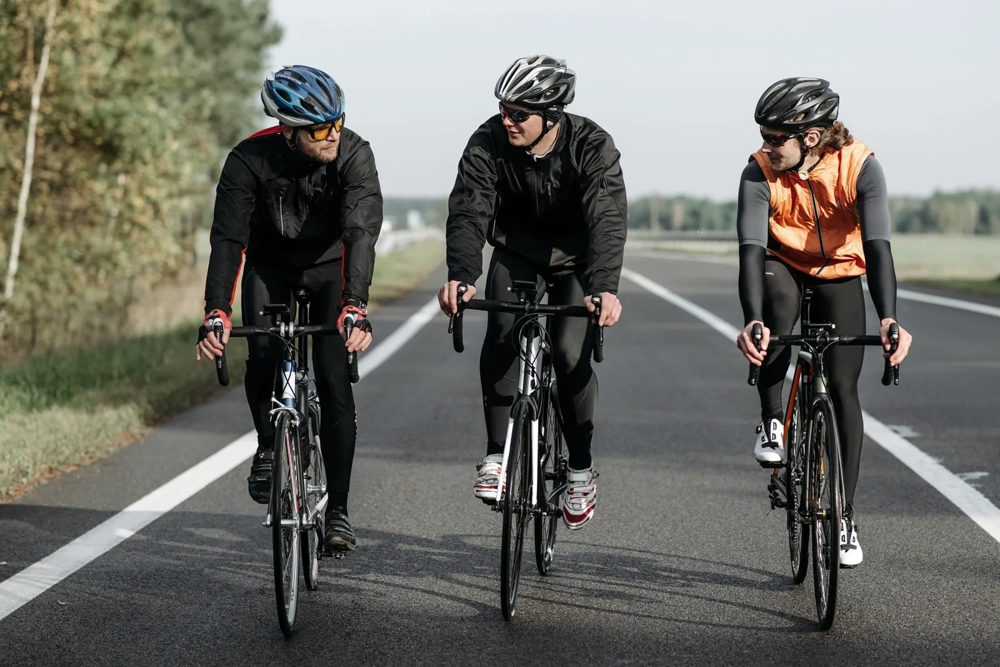
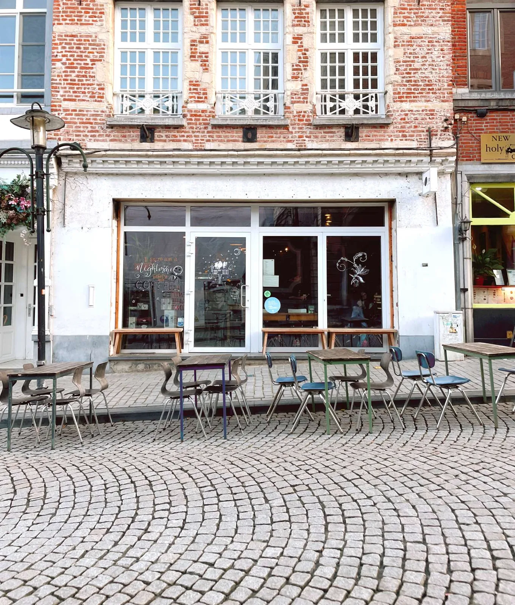

Eigen bonenEspresso
Kort, krachtig en verrassend zoet. Hier proef je meteen wat er aan de brander gebeurde.
Elke kop die we schenken, begint bij onze eigen brander. Er ligt elke dag andere taart in de toonbank en je blijft gerust zo lang je wil. Gewoon in de Naamsestraat, een paar minuten van de Grote Markt.
Vandaag open van 8:30 tot 17:30


Onze klassiekers, met bonen van de eigen brander. Liever haver of soja, of toch een deca? Dat kan allemaal.

Eigen bonenKort, krachtig en verrassend zoet. Hier proef je meteen wat er aan de brander gebeurde.

Met latte artZijdezachte melk op een dubbele shot. Met havermelk of soja? Zeg het gerust aan de toog.

Rustig gezetVoor wie de boon puur wil proeven. Helder en zacht, en perfect voor een lange babbel.

Gasten-favorietIJskoud met een vleugje karamel. Een gast noemde hem met havermelk de beste koffie die ze ooit in Leuven dronk.
 Elke dag anders
Elke dag andersWat er vandaag in de toonbank ligt? Kom gerust kijken, of vraag het aan wie achter de toog staat.
 Uit de oven
Uit de ovenKrokant, boterig en op zijn best als hij nog een beetje warm is. Met een cappuccino ernaast is je ochtend goed.


Onze bonen, op de toogDe koffie in je kopje komt van Naft Coffee Roasters, onze eigen branderij. We branden niet apart voor espresso of voor filter. Per boon zoeken we de smaak die er het best in zit, zodat ze in allebei tot haar recht komt. En ja, onze bonen zijn fairtrade.
Acht jaar was Yassin onze vaste barista. Nu staat hij aan de brander.Hij leidt sinds kort de branderij van Naft.
Fietsen zit bij ons in het bloed. Clubs en vrienden vertrekken hier, pauzeren hier of sluiten hier hun rit af met een koffie. Zo reden we al een woensdagse social ride met Heathland Gravel, en onze buren van Pepas Frituur zorgden voor de honger achteraf.

Groepsrit gepland? Laat het ons wetenEr staat een kom water klaar en meestal ligt er ook een kauwstaaf.
Plantaardige melk vraag je gewoon aan de toog, in elke koffie.
Geen cafeïne meer na vier uur? Onze decafeïne is echt de moeite.
Ook als je buiten op het terras zit. Ideaal om even door te werken.
Bijna duizend reviews op Google. Hier zijn er een paar waar we stil van werden.
★★★★★"My favorite coffee bar in the whole of Leuven! Noir is not just a trend or a hype, they (the owners and staff) know so much about coffee, and take great pride in what they are serving."
★★★★★"Our first time here, and we instantly fell in love with this place! The interior is both unique and cozy, the atmosphere warm and welcoming."
★★★★★"My girlfriend got an iced caramel latte with oat milk and it was probably the best coffee we've had in Leuven to date."

Naamsestraat 49, LeuvenBinnen bij de toog, of buiten op ons terras in de Naamsestraat. Ook op zondag staan we voor je klaar.
Ik maakte deze demo voor jullie om te tonen wat er kan. Na een kort gesprek maak ik er iets veel persoonlijkers van, helemaal naar jullie wens.
Vrijblijvend. Ik kom langs of we bellen.
Op maat, op jullie eigen domein.
Geen voorschot. Jullie betalen pas als alles klaar is.
Hosting, domeinnaam en kleine wijzigingen, zoals nieuwe openingsuren.
Omdat een voorbeeld meer zegt dan een mail. Zo zien jullie meteen wat er kan, en het kost jullie niets.
Nee. Het gesprek is vrijblijvend. Vinden jullie het niks, dan is het daarmee gedaan.
Na ons gesprek staat jullie site binnen 10 tot 14 dagen online.
Zeker. Jullie domeinnaam kan gewoon blijven, de nieuwe site komt in de plaats van de oude.
Nee, dat doe ik op basis van ons gesprek. Eigen foto's zijn mooi meegenomen, maar niet nodig om te starten.